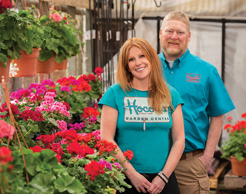

Nurturing Your Landscape Since 1939
At Hocott's Garden Center, we take pride in treating your lawn as if it were our own. Established in 1939, we've been a cornerstone of the community, dedicated to providing top-notch landscaping services and premium garden supplies with a personal touch.
Our Commitment to Excellence
With decades of experience under our belt, we specialize in all aspects of landscaping design and maintenance. From conceptualization to execution, our team of skilled landscapers ensures every detail is meticulously attended to. We understand the importance of a well-maintained outdoor space, and we're here to make your vision a reality.
Your Local Garden Experts
As your local garden center, we offer an extensive selection of plants, flowers, and trees to transform your outdoor oasis. Whether you're a seasoned gardener or just starting out, our knowledgeable staff is here to provide expert advice and assistance every step of the way. Browse through our wide array of garden supplies and seasonal decor, and let your creativity flourish.
At Hocott's Garden Center, we understand that not everyone has a green thumb or knows exactly what they want when it comes to planters. That's why we offer a unique service tailored to those seeking vibrant yet practical solutions.